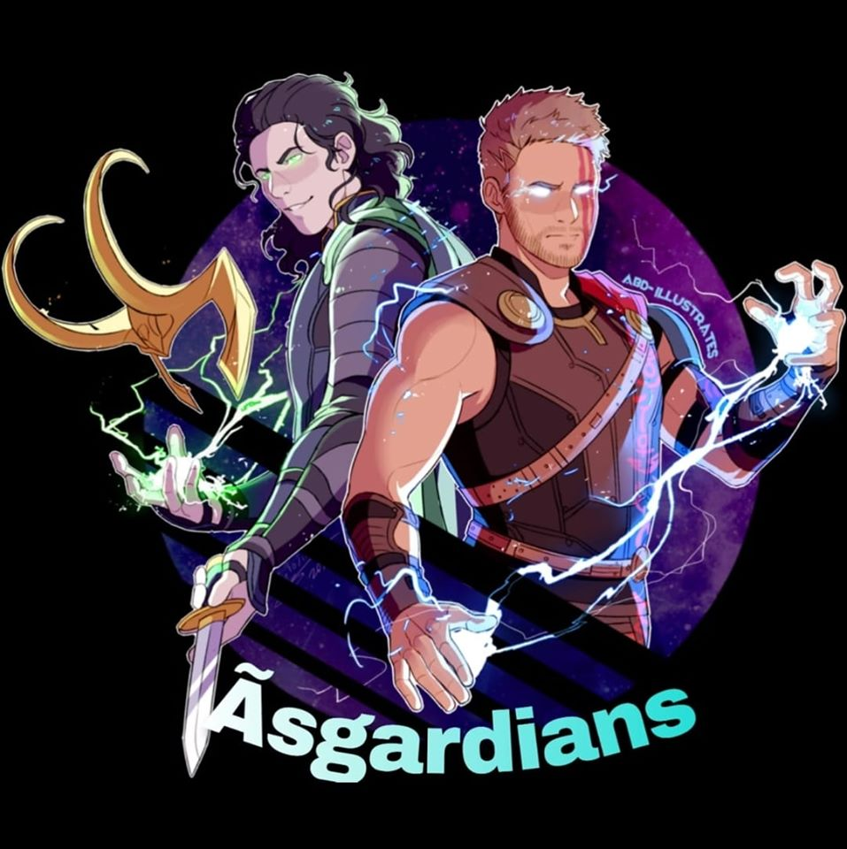

WELCOME TO ASGARDIAN'S GAMING


Asgardia, also known as the Space Kingdom of Asgardia and "Asgardia the Space Nation", is a micronation formed by a group of people who have launched a satellite into Earth orbit.They refer to themselves as "Asgardians" and they have given their satellite the name "Asgardia-1". They have declared sovereignty over the space occupied by and contained within Asgardia -1. The Asgardians have adopted a constitution and they intend to access outer space free of the control of existing nations and establish a permanent settlement on the Moon by 2043. Igor Ashurbeyli, the founder of the Aerospace International Research Center, proposed the establishment of Asgardia on 12 October 2016. The Constitution of the Space Kingdom of Asgardia was adopted on 18 June 2017 and it became effective on 9 September 2017.[8] Asgardia's administrative center is located in Vienna, Austria
Player's Unknown Battlegrounds (PUBG)is an online multiplayer battle royale game developed and published by PUBG Corporation, a subsidiary of South Korean video game company Bluehole. The game is based on previous mods that were created by Brendan "PlayerUnknown" Greene for other games, inspired by the 2000 Japanese film Battle Royale, and expanded into a standalone game under Greene's creative direction. In the game, up to one hundred players parachute onto an island an d scavenge for weapons and equipment to kill others while avoiding getting killed themselves. The available safe area of the game's map decreases in size over time, directing surviving players into tighter areas to force encounters. The last player or team standing wins the round. Battlegrounds was first released for Microsoft Windows via Steam's early access beta program in March 2017, with a full release in December 2017. The game was also released by Microsoft Studios for the Xbox One via its Xbox Game Preview program that same month, and officially released in September 2018. A free-to-play mobile version for Android and iOS was released in 2018, in addition to a port for the PlayStation 4. A version for the Stadia streaming platform was released in April 2020. Battlegrounds is one of the best-selling and most-played video games of all time. The game had sold over 70 million copies by 2020, with PUBG Mobile having been downloaded over 600 million times. Battlegrounds received positive reviews from critics, who found that while the game had some technical flaws, it presented new types of gameplay that could be easily approached by players of any skill level and was highly replayable. The game was attributed to popularizing the battle royale genre, with a number of unofficial Chinese clones also being produced following its success. The game also received several Game of the Year nominations, among other accolades. PUBG Corporation has run several small tournaments and introduced in-game tools to help with broadcasting the game to spectators, as they wish for it to become a popular esport. The game has also been banned in some countries for allegedly being harmful and addictive to younger players. THE ASGARDIANS GAMING CREW MEMBARS